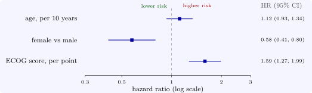

7.3 Inference and interpretation
Three tests of \(\beta = 0\) are available: the Wald test \((\hat \beta /\operatorname {se})^2\), the likelihood ratio test \(2(\ell _P(\hat \beta ) - \ell _P(0))\), and the score test; all are approximately \(\chi ^2\) with as many degrees of freedom as parameters tested, and they agree in large samples. A \(95\%\) confidence interval for a hazard ratio is \(\exp (\hat \beta \pm 1.96\,\operatorname {se})\), computed on the log scale because \(\hat \beta \), not \(e^{\hat \beta }\), is approximately normal.
Example 7.3.1. For sex in lung (\(1\) = male, \(2\) = female), \(\hat \beta = -0.531\), s.e. \(0.167\), so \(\widehat {\text {HR}} = 0.588\) with \(95\%\) interval \((0.424, 0.816)\): women’s hazard of death was \(41\%\) lower than men’s. The Wald, likelihood ratio and score statistics are \(10.1\), \(10.6\) and \(10.3\), all with \(p \approx 0.001\) (Software 7.5.2).
Example 7.3.2. With age, sex and ECOG score together (for the \(227\) patients with all three recorded), the hazard ratios are \(1.011\) per year of age (\(1.12\) per ten years, interval \(0.93\) to \(1.34\)), \(0.575\) for women (\(0.41\) to \(0.80\)) and \(1.59\) per point of ECOG score (\(1.27\) to \(1.99\)) (Figure 7). Each is adjusted for the others: the effect of sex is estimated for patients of the same age and performance score. Performance score is the strongest predictor; age, once score is allowed for, adds little (\(p = 0.23\)).

Questions on this section
Stuck on something here? Ask below and it stays attached to this topic.